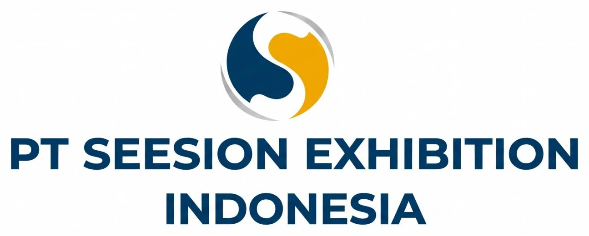
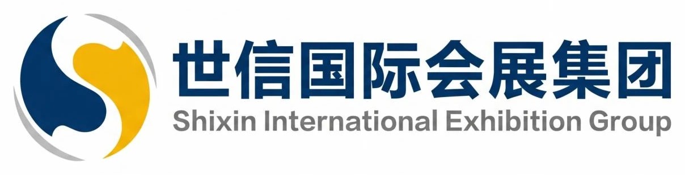

About the Organizer
PT Seesion Exhibition Indonesia is based in Jakarta and works as part of Shixin International Exhibition Group's international exhibition network.
Local presence in Jakarta. An international exhibition network.
Headquartered in Jakarta, PT Seesion Exhibition Indonesia supports Shixin International Exhibition Group's global exhibition strategy. Backed by the parent group's experience since 1998, it connects enterprises through professional exhibitions spanning energy and mining, agriculture, livestock, and industrial machinery.



Group-level achievements of the parent group — not IMDX 2027 figures.
- 30+Internationally certified exhibition brands
- 180+Government agencies & business associations partnered with
- 100,000+Enterprises served
- 700,000 m²Average annual exhibition area
- Top TenBrand exhibition organizer in China (CCES award)
Profile, track record & cooperation.
 ORGANIZER PROFILE
ORGANIZER PROFILEOrganizer Profile
Based in Jakarta, Seesion Indonesia combines local industry insight with Shixin Group's international exhibition experience to connect companies, institutions, and business opportunities across industrial sectors.
 ICEE 2025 · 15–17 MAY 2025
ICEE 2025 · 15–17 MAY 2025Track Record
ICEE 2025 was scheduled for 15–17 May 2025 at JIExpo Jakarta. Its published plan targeted 20,000 m² of exhibition space, 500+ participating enterprises, and more than 20,000 professional visitors, alongside industry forums.
 19 MARCH 2025
19 MARCH 2025Strategic Cooperation
Seesion Indonesia signed a strategic cooperation memorandum with the Indonesian Coal Mining Association to advance information sharing, market development, technical exchange, and exhibition promotion.

Connecting China and ASEAN
Seesion Indonesia aims to strengthen professional exhibition services, industrial cooperation, and global connections, serving as a bridge for enterprises and resources between China and ASEAN.
A market built on resources & growth.

Economy
Southeast Asia's largest economy, with a diverse industrial base and strong demand for industrial and mining-related partnerships.

Culture & Society
A diverse society and expanding education, health, and social development provide a foundation for continued regional engagement.

Coal Resources
Substantial coal resources, with major coal-bearing regions including Sumatra and Kalimantan, supporting the mining and energy economy.